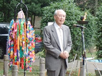
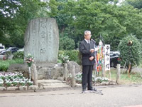
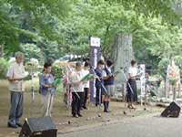

|
|
||||||||
 主催者のしらさぎ会肥田舜太郎会長より「毎年、日本の国が再び戦争することなく、核兵器が二度と使われないように願い慰霊碑の前で式典を行ってきました。核兵器はまだなくなっておらず、絶えず新しい核兵器が作られ、そして、原爆や核兵器の被害者であるとわからないような形で、現在、被爆者が増えつつあります。特にイラクで子ども達が劣化ウラン弾の放射線の影響で苦しんでいます。現在生き残っている被爆者は核兵器の被害を身をもって体験した生き証人として、自分たちの余生のすべてを捧げて核兵器廃絶のために一生懸命努力しています。原爆を体験し戦争を生き延びてきた人間の1人として子どもや孫たちを戦争の被害にあわせたくない。慰霊式典は、70周年までは頑張っていきたい」とあいさつがありました。  次に、来賓として、埼玉県保健医療部疾病対策課千島郁夫副課長、衆議院議員(牧原秀樹氏･日森文尋氏･田中良生氏)、元参議院議員(吉川春子氏)、埼玉県生活協同組合連合会、埼玉県原水爆禁止協議会、埼玉県平和運動センター、埼玉県地域婦人会連合会からあいさつがありました。  参加者一人ひとりが花と折鶴を献花台にそなえ、献水を行いました。遺族代表のあいさつ、若い世代からの平和の願いのアピール、被爆体験聞き書き行動実行委員会による埼玉県在住の被爆者の方々の体験をまとめた「８月の晴れた日」の朗読、そして参加者全員で「原爆を許すまじ」を斉唱しました。 |